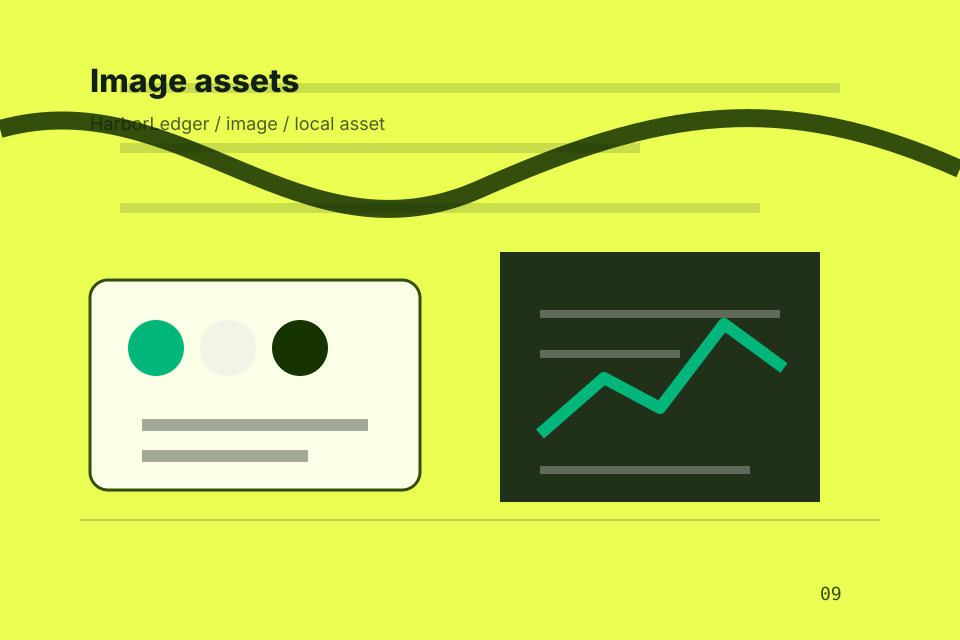

<!-- Source partial: Money movement calculator hero. -->
<section id="section-hero" class="section hero-section hero-money-movement-calculator-hero composition-money-movement-calculator-hero" data-section="Hero" data-composition="Money movement calculator hero" data-hero-type="Money movement calculator hero" data-track="section_home_hero">
  <div class="container hero-grid">
    <div class="hero-copy">
      <p class="eyebrow">Home / 01</p>
      <h1>HarborLedger</h1>
      <h2>A transfer-calculator finance site with bold green hierarchy, fee transparency, route selection, and trust notes</h2>
      <p class="lead">HarborLedger brings measured financial stewardship guidance to the opening route, with practical context for finance, banking &amp; financial services decisions and a clear route to the next step.</p>
      <p>HarborLedger connects the opening route with practical proof, useful comparisons, and the questions finance, banking &amp; financial services visitors bring to the page. Visitors can scan the essentials, understand the tradeoffs, and decide whether to book advisor call or keep exploring. The rhythm is built for action without removing the context people need to trust the decision.</p>
      <div class="button-row">
        <a class="button primary" href="../contact.html" data-track="cta_home_hero">Book Advisor Call</a>
        <a class="button secondary" href="https://ash-tra.com/discovery/" data-track="secondary_home_hero">Discuss build</a>
      </div>
      
      <div class="hero-proof" aria-label="Trust notes">
        <span>Finance scope</span><span>Compare options</span><span>Request advice</span>
      </div>
<div class="container signature-panel signature-calculator" data-signature="calculator" data-page="home" data-section-key="hero">
    <div>
      <p class="eyebrow">Money movement calculator hero</p>
      <h3>Estimate the next step</h3>
      <p>Select a path and HarborLedger keeps the next step, proof, and follow-up expectation aligned with security and suitability.</p>
    </div>
    <div class="signature-controls" role="group" aria-label="Advisory route selector, calculator-style estimate, risk toggles">
      <button type="button" data-option="diagnose" aria-pressed="true">Diagnose</button><button type="button" data-option="compare" aria-pressed="false">Compare</button><button type="button" data-option="act" aria-pressed="false">Act</button>
    </div>
    <output data-signature-output aria-live="polite">Diagnose route selected for HarborLedger.</output>
  </div>
    </div>
    <figure class="hero-media target-media target-kind-calculator target-profile-wise">
      <div class="target-stage target-calculator target-profile-wise" aria-hidden="true">
  <div class="calculator-panel">
    <h4>Book Advisor Call</h4>
    <label><span>Goals</span><b>1,000</b></label><label><span>Risk</span><b>Today</b></label><label><span>Promise</span><b>Clear fees</b></label>
    <button type="button">Services</button>
  </div>
</div>
      <picture>
        <source media="(max-width: 640px)" srcset="../assets/images/hero/finance-home-hero-mobile.svg">
        <source media="(max-width: 1024px)" srcset="../assets/images/hero/finance-home-hero-tablet.svg">
        
      </picture>
      <figcaption>Payment flows, rate cards, account panels expressed through a custom static visual system.</figcaption>
    </figure>
  </div>
</section>
